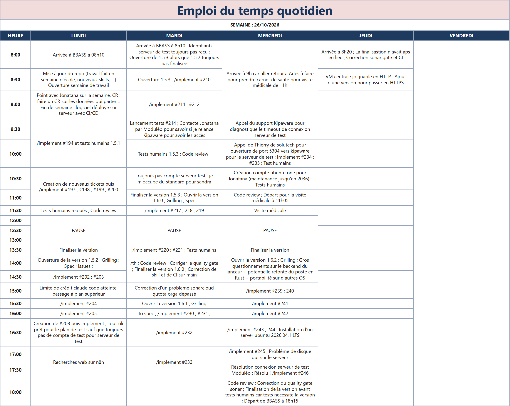

Alternance Agents IA · 2026–2027
Ce qu’on peut faire aujourd’hui par rapport à la semaine du 5 octobre
Versions attendues cette semaine (feuille de route). Les blocs passent de « prévu » à « déployé » à chaque finalisation.
Le collaborateur obtient depuis le chat les devis, factures, temps passés, planning et, à la demande, les parcelles d’une affaire — toujours en lecture seule, avec les mêmes garanties qu’en 1.5.0. Chaque compte ne voit que ce que son groupe Moduléo (Cogeo, Planning) autorise.
Le collaborateur peut demander au chat d’écrire dans Moduléo : le chat prépare l’écriture, une carte montre ce qui sera fait, et rien ne part avant le clic sur Confirmer. Cette version sert à l’essai sur le serveur de test : la production n’écrit jamais dans Moduléo. Numéro produit : 1.6.3.
Le compte administrateur gère les droits Moduléo depuis le Panel d’administration, dans un nouvel onglet Outils → Moduléo, sans intervention technique. Les droits restent ceux recopiés en 1.5.1 et s’appliquent dès la question suivante dans le chat.
Chaque version du logiciel est vérifiée automatiquement avant d’être acceptée, sans dépendre d’une validation faite à la main sur le poste de l’alternant. C’est la référence sur laquelle s’appuieront l’installation du serveur central et des postes (1.6.1 / 1.6.2).
Le serveur central de Castries ne dépend plus du poste de l’alternant : l’administrateur du cabinet l’installe et le met à jour lui-même, à partir des versions vérifiées automatiquement depuis la 1.6.0. Rien ne change pour le collaborateur dans le chat.
BBASS devient un vrai logiciel Windows sur le poste du collaborateur : il s’installe sans le code source, sans droits administrateur et sans l’alternant, puis reste toujours à la même version que le serveur central auquel il est relié.
Les bugs connus hors écriture Moduléo sont corrigés. Numéro produit : 1.6.4.
Trois problèmes trouvés à l’usage juste après les livraisons de la semaine sont corrigés, pour que le poste installé fasse ce que les dernières versions annoncent.
